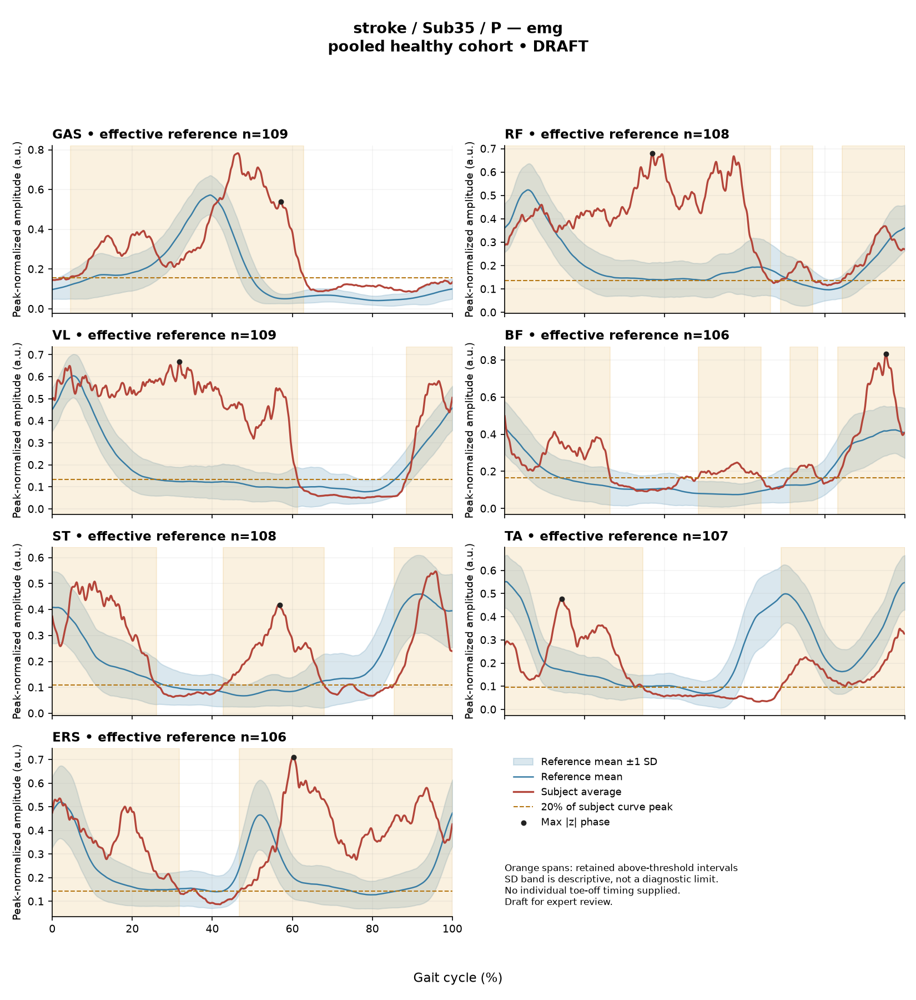
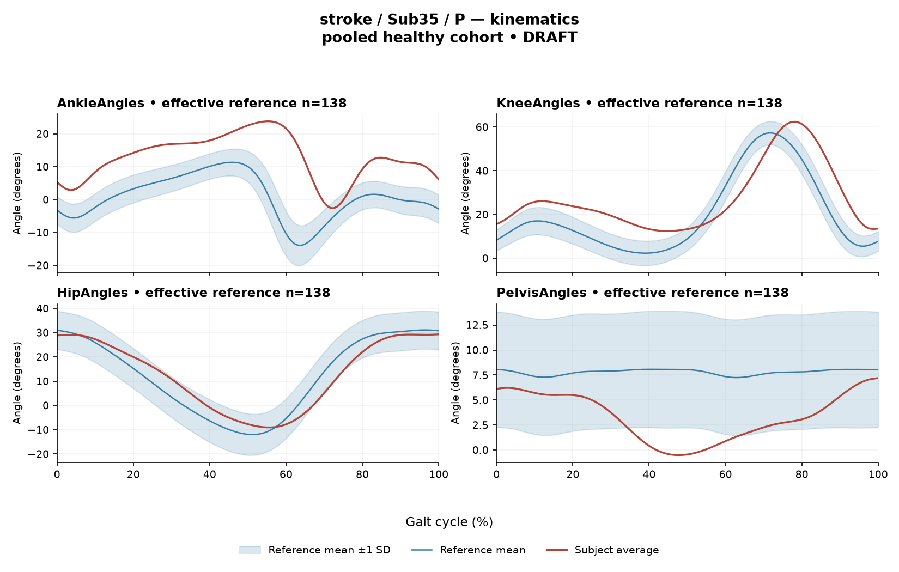

RCAA2C595400C1CE1
rater2 / 118 of 150 / Case stroke_Sub35_P / Review row 119
Report: verbatim text
Text file for exact quotations# Gait Report Interpretation — Sub35_P **Interpretation version:** limited-evidence-v3.1-candidate **Scope:** Research-level interpretation of supplied summary metrics only. This is not a diagnosis, not a functional assessment, and contains no treatment guidance. --- ## 1. Objective Findings **Participant and side.** Sub35_P is a member of the **stroke cohort**, and all data below describe the **paretic side**. No non-paretic-side data, and no contralateral or bilateral comparison, are supplied in this input. **Analysis cycle.** The released cycle runs from initial contact of the paretic limb (0%) to the next initial contact of the same limb (100%). These endpoints are two successive occurrences of the same event, not a single instant. **No intermediate gait event is supplied** — individual toe-off is not provided, and no stance/swing boundary, loading-response, mid-stance or pre-swing marker is available. Consequently every timing statement below is expressed purely as a **percentage of the analysis cycle**; percentages are not translated into gait phases, and no conventional 60/40 stance–swing split is substituted. **Spatiotemporal values (as supplied).** | Measure | Value | |---|---| | Gait speed | 0.68 m/s | | Speed band label | "limited community ambulator (0.4–0.8 m/s)" | | Cadence | 90.8 steps/min | | Step length symmetry index | **+5.7%** (successive-footfall definition) | The speed-band label denotes a **speed range only**. It does not describe measured walking independence, safety, assistive-device use, endurance, or real-world community mobility, none of which are supplied here. The symmetry index is positive, meaning by the stated convention the **paretic step is longer than the non-paretic step**, by 5.7% of the mean step length. This value is tied to the successive-footfall definition (each heel at its own initial contact); the instantaneous definition can yield a different number for some subjects and is not reported here. No healthy reference interval for step length symmetry is supplied, so this value is reported descriptively and is not classified as normal or abnormal. **Critical comparability limit.** The subject's speed of 0.68 m/s lies **below the 0.80–1.79 m/s span of self-selected speeds in the healthy reference cohort**. Therefore **no speed-matched healthy reference exists in this dataset** for this participant. The reference used is also pooled across both body sides and all ages and is not age-matched. Every deviation described in Sections 2 and 3 is a **difference from that pooled empirical reference**, in which slow-walking effects and stroke-related control changes are inseparably conflated. These data cannot establish that any deviation is caused by stroke, and they cannot establish a clinical diagnosis, severity grade or impairment level. The same interpretive limits would apply to a control participant compared against the same reference. **Channels supplied.** Sagittal-plane kinematics for ankle, knee, hip and pelvis; seven EMG envelope channels (GAS, RF, VL, BF, ST, TA, ERS) with co-contraction indices for two pairs. **Not supplied in this input** (and therefore not to be described as absent from the source release): coronal- and transverse-plane kinematics; kinetics; individual toe-off and other gait events; matched muscle-specific normal timing references; stride-by-stride data or variability measures; raw-signal quality checks; expert visual plots; age; sex; time post-stroke; clinical stroke scores; non-paretic-side designation and data. Some of these fields may exist in the wider release but are outside this task's information boundary. Separately, the dataset-level array audit documented **614 of 700 evaluable curve combinations**, with 86 lacking valid nonzero paired samples — a documented dataset property, not a statement about this subject's channels, all seven of which returned results. --- ## 2. EMG Envelope and Threshold Findings **How these numbers were produced.** The curves are **ensemble-averaged envelopes**. Normalization used a **shared maximum across available strides per participant, side and muscle**, before averaging; the denominator is not shared between sides. Amplitudes are therefore **relative envelope values only** — they are not neural drive, force, torque or strength, and muscles must not be ranked as stronger or weaker from them. Because only a mean curve is available, **nothing here describes stride-to-stride consistency**; the pattern below is a property of the averaged envelope and should not be assumed to recur identically in every individual stride. "Above-threshold interval" means the region where the averaged envelope exceeds **20% of that same curve's own peak**, with a minimum retained interval of 3% of the cycle. These are algorithmic properties of the averaged envelope under that rule — **not physiological onset, offset, contraction duration, or inactivity outside the intervals**. An interval written X%–Y% with X > Y wraps the 100%→0% boundary, i.e. the mean envelope remains above threshold across the cycle-defining initial contact. | Muscle | Retained interval(s) (% cycle) | Reported coverage | Peak relative amplitude | Max \|z\| vs reference (location) | |---|---|---|---|---| | GAS | 4%–63% | 59% | 0.78 | 20.3 above ref. (57%) | | RF | 69%–77%; 84%–66% (wraps) | 91% | 0.68 | 7.4 above ref. (37%) | | VL | 88%–61% (wraps) | 73% | 0.67 | 8.3 above ref. (32%) | | BF | 48%–64%; 71%–78%; 83%–26% (wraps) | 68% | 0.83 | 3.1 above ref. (95%) | | ST | 43%–68%; 85%–26% (wraps) | 67% | 0.55 | 5.6 above ref. (57%) | | TA | 69%–35% (wraps) | 66% | 0.48 | 3.3 above ref. (14%) | | ERS | 47%–32% (wraps) | 87% | 0.72 | 5.8 above ref. (60%) | **Boundary continuity.** Six channels (RF, VL, BF, ST, TA, ERS) show a retained interval that crosses the cycle boundary, i.e. the mean envelope is continuously above its own 20% threshold across the initial-contact boundary at 0%/100%. **GAS is the exception**: its single retained interval begins at 4% — numerically close to, but not at, the initial-contact boundary — and ends at 63%. Anatomically, GAS acts as an ankle plantarflexor and TA as a dorsiflexor, but no interval here is mapped to a functional role such as clearance, push-off or weight acceptance, because the events needed to support such a mapping are not supplied. **Coverage and below-threshold segments.** Coverage values range from 59% (GAS) to 91% (RF). For channels with explicitly separated intervals (RF, BF, ST) the gaps between retained intervals establish that below-threshold segments exist on the mean envelope. For single-interval channels, the reported coverage likewise leaves a remainder of the cycle outside the retained interval. In no case does the supplied evidence establish continuous supra-threshold activity across the entire cycle; equally, a segment falling below the 20%-of-own-peak criterion does **not** establish muscular inactivity or absent innervation there. No timing here is characterized as normal, early, delayed or prolonged — the matched timing references required for such labels are not supplied. **Max |z| interpretation.** Max |z| is an **extreme-value statistic**: the largest standardized difference from the phase-specific reference mean across all 1001 phase points. Its location marks **where the standardized difference is largest**, which is not necessarily the location of peak envelope amplitude and is not a gait event. "Above reference" means above the phase-specific reference **mean** at that point, not above a healthy percentile limit. The conventional 2-SD rule does **not** apply: in this dataset every one of 109 healthy controls exceeds |z| = 2 on at least one muscle, and the supplied per-muscle healthy 95th percentiles for this statistic span 3.65 (ERS) to 4.61 (TA), higher still under leave-one-out. Against that framing: - **BF (3.1)** falls below even the lowest supplied per-muscle 95th percentile (3.65), so it is within the healthy range for this statistic. - **TA (3.3)** falls below its own supplied 95th percentile of 4.61. - **ERS (5.8)** exceeds its own supplied 95th percentile of 3.65. - **GAS (20.3), VL (8.3), RF (7.4) and ST (5.6)** exceed 4.61, the upper end of the supplied per-muscle percentile range, and so exceed their own 95th percentiles even though those muscle-specific values are not individually supplied. **GAS at 20.3 is by a wide margin the largest standardized difference in this dataset**, located at 57% of the cycle. Exceeding these pooled percentiles indicates a large standardized difference from an **unmatched** empirical reference. Given the speed limitation above, it does not by itself establish abnormal muscle physiology, spasticity, abnormal timing or any disease effect. **Co-contraction indices (CCI).** CCI is the Falconer–Winter index computed over the **full continuous envelopes** across the whole cycle (2 × common area / summed areas). It is a whole-cycle overlap index of normalized envelopes — **not simultaneous activation time, not muscular force, not a phase-specific result** — and it can be non-zero even when the detected burst intervals of a pair do not overlap, because sub-threshold envelope area contributes. - **TA vs GAS = 0.60.** The healthy reference median is 0.39 with a 2.5th–97.5th percentile interval of 0.24–0.59. This subject's value sits **marginally above the upper endpoint (0.59)** — a difference of 0.01 in the displayed precision, so it is best described as essentially at that endpoint rather than as a distinct excursion. Near-boundary rounded values do not justify classifying the hidden unrounded value. - **RF vs BF = 0.66.** This lies **within** the reference interval 0.48–0.83 and slightly below the reference median of 0.68. Being inside the interval does not establish physiologically normal co-activation or normal motor control; being at or outside an endpoint does not establish pathological co-activation, stiffness, impaired control, or a diagnosis. CCI values depend on the specific normalization and envelope pipeline used here and must not be compared with values or thresholds from other studies or algorithms. --- ## 3. Kinematic and Reference Comparisons All kinematic values are **sagittal plane only**. Coronal and transverse data are not included, so no statement can be made about frontal- or transverse-plane mechanics. | Segment/joint | Sagittal ROM | Gait Variable Score (GVS) | |---|---|---| | Ankle | 26.4° | 13.71 | | Knee | 49.9° | 12.00 | | Hip | 38.4° | 4.94 | | Pelvis | 7.7° | 5.08 | **Composite (GPS-like) deviation score: 9.77.** This is the RMS of the per-joint GVS values across the four supplied sagittal channels — a **"GPS-like" composite, not the validated 9-variable Gait Profile Score**. The reference actually used for this subject is **138 pooled healthy subjects over 1001 phase points (main_cohort_excel)**. Relative to the supplied composite reference (median 5.1, 95th percentile 10.7), the value of 9.77 is **above the median and below the 95th percentile**. These are **pooled calibration percentiles**, not matched leave-one-out normal limits, and must not be treated as such; a leave-one-out run would use one subject fewer and give different limits. **Distribution across joints.** GVS is a summary root-mean-square difference from the reference mean waveform. It is **directionless and phase-less**: it does not indicate whether the curve sits above or below the reference, nor at which point in the cycle the difference occurs. On that basis, the ankle (13.71) and knee (12.00) contribute the largest per-joint differences from the reference, while the hip (4.94) and pelvis (5.08) contribute substantially smaller ones. Nothing in these numbers localizes the deviation to a waveform direction, an offset versus a shape difference, or a portion of the cycle. **ROM.** The ROM values are reported descriptively. **ROM alone does not establish a clinical restriction** in the absence of an appropriate matched comparison, and no ROM reference interval is supplied here. No claim of contracture, limitation or excess motion can be supported by these values. **Overall comparability.** As stated in Section 1, the reference is pooled across sides and ages and contains no walkers at 0.68 m/s. A speed falling outside the reference range means no matched reference exists; equally, a speed falling inside an overall range would not by itself prove that an appropriate matched reference exists. The kinematic differences described here are therefore **differences from an unmatched empirical reference** and cannot be attributed to stroke pathology, cannot be separated from the effects of walking slowly, and do not establish a clinical diagnosis or severity level. --- ## 4. Questions for Further Clinical Assessment These are open questions raised by the limits of the supplied data. None presupposes that the mechanism or measurement issue in question has been observed, and none implies a treatment direction. 1. **Gait events.** Can individual toe-off and other event markers for this participant's paretic cycle be retrieved from the release? Without them, none of the percentages in Section 2 can be assigned to a gait phase, and no timing can be classified as early, delayed or prolonged. 2. **Speed-comparable reference.** Is a speed-comparable or speed-adjusted reference (or a leave-one-out reference matched on speed and age) available or constructible? This is the single largest constraint on interpreting the composite score of 9.77 and every EMG max |z| value. 3. **GAS channel.** The GAS max |z| of 20.3 is an extreme outlier relative to all supplied percentile information. Is there any evidence on review of raw signal quality — electrode placement, crosstalk, motion artefact, baseline offset, or the per-muscle normalization denominator — that could contribute to a standardized difference of this magnitude? Raw-signal quality checks were not part of this input and this question should not be read as implying that a problem was found. 4. **Contralateral data.** Are non-paretic-side EMG and kinematic data available? Because the normalization denominator is participant-, side- and muscle-specific and not shared between sides, any between-side amplitude comparison would need explicit handling of that scaling. 5. **Stride-level data.** Are individual stride curves retrievable, so that stride-to-stride consistency of the envelope pattern — which an averaged curve cannot address — could be examined? 6. **Step-length definition.** The +5.7% symmetry index used the successive-footfall definition. Would the instantaneous definition yield a materially different value for this participant, and which definition is preferred for the intended comparison? 7. **Out-of-plane motion.** Only sagittal channels were supplied. Is coronal/transverse kinematic data available if the clinical question concerns motion outside the sagittal plane? 8. **Clinical and demographic context.** Are age, sex, time post-stroke and clinical stroke scores available in the release for this participant? None were supplied here, and their absence from this input does not mean they are absent from the source dataset. --- **Summary of interpretive limits.** All findings above describe averaged envelope and summary kinematic metrics compared against a pooled, non-age-matched, non-speed-matched empirical reference that contains no walkers at this participant's speed. The comparison cannot establish a disease effect, a physiological abnormality, or a clinical diagnosis, and no severity grading or statistical significance has been assigned.
Coverage rows
| Excel row | ID | Required content | Components |
|---|---|---|---|
| 677 | R121 | Describe walking speed 0.68 m/s and that it is below the stated 0.80 m/s reference floor; no reference at this speed is supplied. | AND: displayed speed and that it lies below the 0.80 m/s reference floor, so no speed-supported healthy reference exists in this dataset. Optional: cadence, speed-band label (not a functional claim). One sentence may also serve the comparability half of G03. |
| 678 | R122 | Identify ankle AND knee as the principal sagittal GVS differences. Exact ordering is optional. Exact GVS values are optional; identify the findings as reference-relative sagittal summary differences. | AND: ankle AND knee, no order. Stating which joint is larger is optional; asserting the reverse order is an error. Exact GVS values are optional; no waveform direction, phase or restriction is required. |
| 679 | R123 | Describe GAS envelope above its phase-specific reference mean at approximately 57% of the analysis cycle (displayed max |z| 20.3). Within each route, muscle identity AND mean-relative direction AND approximate cycle location are required. Exact max-|z| repetition is optional. | Required for each route: muscle identity AND direction relative to the phase-specific reference mean AND approximate cycle location. Optional: exact max |z| value, comparison with the supplied endpoint span (descriptive only). Prohibited: percentile classification, gait phase, physiological onset, severity. |
| 680 | R124 | Describe EITHER VL envelope above its phase-specific reference mean at approximately 32% of the analysis cycle (displayed max |z| 8.3) OR RF envelope above its phase-specific reference mean at approximately 37% of the analysis cycle (displayed max |z| 7.4). One complete muscle-specific route is sufficient. Within each route, muscle identity AND mean-relative direction AND approximate cycle location are required. Exact max-|z| repetition is optional. | OR: one complete route suffices. Required for each route: muscle identity AND direction relative to the phase-specific reference mean AND approximate cycle location. Optional: exact max |z| value, comparison with the supplied endpoint span (descriptive only). Prohibited: percentile classification, gait phase, physiological onset, severity. |
| 681 | R126 | Describe the supplied successive-footfall step-length index 5.7% and its meaning: the paretic step is longer. | AND: displayed index and the direction supported by its sign. Optional: formula, definition wording. Acceptable phrasing for small displayed values: "a small difference with the paretic step slightly shorter/longer" (not a cutoff). Prohibited: restating the index as a percentage shortening (E01), severity grades, whole-gait symmetry generalization (E07 issue, not an omission). |
| 682 | G03 | Express a meaningful limitation of reference comparability AND why the comparison cannot establish disease effects or clinical diagnosis; for controls it cannot establish disease or overall normality. One statement may also support a case requirement. | AND: comparability and inference limitations |
Exact system input
Saved fileDraft a research gait-report interpretation for a physical therapist or physiatrist using only the supplied quantitative summary. This is a limited-evidence interpretation task, not diagnosis or treatment selection. Rules: - Describe the participant's actual group and side, available findings, and missing channels accurately. Healthy-group membership does not prove normal physiology; deviations from an empirical reference do not by themselves establish disease. - Treat detected EMG intervals and coverage as properties of an averaged envelope under the stated threshold and duration rule. Do not convert them into physiological onset, offset, duration, continuous contraction, or inactivity outside the intervals. You may describe reported coverage, retained intervals and boundary continuity at the mean-envelope level. Do not infer the same pattern in every individual stride. Say no below-threshold segment only when the supplied evidence establishes that; a rounded coverage value or no retained interval alone does not establish it. - Individual toe-off and matched muscle-specific timing references are not supplied in this task. Use percentages of the analysis cycle. When the input explicitly identifies an initial-contact boundary, you may name that boundary or describe numerical proximity to it. Do not assign stance/swing, loading response, pre-swing, mid-stance or another event to a percentage, or substitute a conventional 60% split. Anatomical muscle actions may be named, but do not map an interval to a gait-phase function such as clearance, push-off or weight acceptance. Do not characterize timing as normal, early, delayed or prolonged without the required evidence. - Respect the supplied normalization method. Relative envelope amplitude is not strength or force, and average curves do not establish stride-to-stride variability. - Report CCI as a whole-cycle overlap index of normalized EMG envelopes. You may compare it with the supplied empirical interval or a supplied median, including proximity to an endpoint. Do not invent an unavailable median. Being within that interval does not establish physiologically normal co-activation or normal muscle function; being outside it does not establish pathological co-activation, stiffness, impaired control or a diagnosis. CCI is not simultaneous activation time, muscular force or a phase-specific result. It depends on normalization and envelope methods; do not transfer values or thresholds from other studies or algorithms. - Describe GVS and GPS-like as summary differences from the stated reference. Neither localizes waveform direction or phase; ROM alone does not establish a clinical restriction without an appropriate comparison. Do not treat pooled calibration percentiles as matched leave-one-out normal limits. - Where using a reference comparison, convey both limited comparability and the inability to establish a disease effect or clinical diagnosis from that comparison. One clear explanation per report is enough; age and speed need not be recited as separate checklist words. A speed inside an overall range does not prove that an appropriate matched reference exists. Apply these limits to controls as well. - The location of maximum |z| is the largest standardized difference from the reference, not necessarily the time of peak envelope amplitude or a gait event. Above/below reference in an EMG row means relative to the phase-specific reference mean at that location, not relative to a healthy percentile limit. - Preserve numerical direction and the displayed precision. Do not invent values, clinical severity grades, statistical significance, or unavailable reference values. Descriptive comparisons with supplied values remain allowed. Near-boundary rounded values do not justify classifying hidden unrounded values. - Clinical follow-up questions may ask whether a mechanism or measurement issue exists; do not presuppose it has already been observed. Do not recommend treatment. If EMG is unavailable, section 2 may simply state that envelope timing, amplitude and CCI cannot be assessed. Reference-only plots do not provide patient EMG. Use exactly these four sections: 1. Objective Findings 2. EMG Envelope and Threshold Findings 3. Kinematic and Reference Comparisons 4. Questions for Further Clinical Assessment
Exact case input
Saved fileCandidate interpretation version: limited-evidence-v3.1-candidate
Draft the four-section report using only this subject's supplied evidence.
Metric definitions (read before interpreting any number below):
- All joint angles and ROM values are SAGITTAL PLANE only. Coronal/transverse data are not included.
- The released EMG curves are ensemble-averaged envelopes. For each participant and recorded muscle, normalization uses a shared maximum across the available strides before averaging; individual strides are not independently rescaled to their own peaks. This pipeline uses the released mean curves without further amplitude normalization. In the checked stroke release, the denominator is participant-, side-, and muscle-specific; it is not shared between sides. The local array audit verified 614 evaluable combinations, not all 700; 86 lacked valid nonzero paired samples. Amplitudes are relative envelope values, not absolute neural activation, force, or strength. Do not rank muscles as stronger or weaker from these amplitudes, or infer stride-to-stride variability from an average curve.
- Above-threshold intervals are the regions where the averaged envelope exceeds 20% of that curve's own peak, minimum retained interval 3% of the cycle (by sample count). An interval written as (X%-Y%) with X > Y wraps across the 100%->0% cycle boundary (envelope remains above threshold across the cycle-defining event). An onset of 0% is the analysis-window boundary, not necessarily a physiological onset. "No interval detected" means no region met the threshold + duration criteria; it does NOT mean the muscle is inactive or non-functional.
- CCI is the Falconer-Winter co-contraction index computed on the full continuous envelopes (2*common area / summed areas), so it can be non-zero even when the DETECTED burst intervals of the pair do not overlap (sub-threshold activity contributes).
- The composite kinematic deviation score is the RMS of the per-joint Gait Variable Scores over the sagittal channels provided ("GPS-like", not the validated 9-variable GPS).
- Step length symmetry index: 200*(paretic - non-paretic)/(paretic + non-paretic), in %. NEGATIVE means the paretic-side step is SHORTER. Two operational step-length definitions exist (successive-footfall: each heel's position at its own initial contact; instantaneous: both heels at the same instant) and give different values for some subjects -- the definition actually used is stated next to the symmetry value.
- "Max |z| deviation" is the LARGEST absolute z-score across all 1001 phase points of the cycle, comparing this curve to the healthy-cohort mean/SD at each phase. This is an extreme-value statistic, NOT a single-observation z-score: in this dataset every one of 109 healthy controls exceeds |z| = 2 on at least one muscle, and per-muscle healthy 95th percentiles for this statistic run 3.65 (ERS) to 4.61 (TA) -- higher still under leave-one-out. Do not label a value abnormal by the conventional 2-SD rule; use the healthy reference range given per muscle where provided.
- Healthy-cohort CCI reference (this dataset): RF-vs-BF median 0.68 (2.5th-97.5th pct 0.48-0.83); TA-vs-GAS median 0.39 (0.24-0.59). Composite score reference: median 5.1, 95th percentile 10.7.
- COHORT BACKGROUND (calibration context, not necessarily the exact reference used for this subject -- the actual reference composition is stated in a dedicated line with the subject data below): the full healthy cohort is 138 subjects for kinematics, effective n = 106-109 per muscle for EMG (29 controls have no usable EMG; completeness varies by age), pooling both body sides and all ages; it is not age- or speed-matched to this subject. A leave-one-out run uses one subject fewer than these counts.
- SPEED SUPPORT LIMIT (applies to most stroke subjects in this dataset): the healthy reference cohort's self-selected walking speeds span 0.80-1.79 m/s. If this subject's gait speed is below 0.80 m/s, NO speed-matched healthy reference exists in this dataset -- 41 of the 50 stroke subjects are below that floor. Deviations from the reference then conflate slow-walking effects with stroke-specific control changes, and the two cannot be separated from these data. Describe deviations from the reference as such; do not attribute them wholly to stroke pathology.
- Additional source fields are outside this input. Age, sex and gait events may be available in the release; time post-stroke, stroke clinical scores and a non-paretic-side designation apply only to the stroke cohort, as applicable. Do not claim every listed field exists for every participant. Distinguish not supplied, not applicable and documented absent recordings.
The released paretic-side cycle runs from initial contact of that limb at 0% to its next initial contact at 100%. The cycle boundary may be called initial contact; the endpoints are successive occurrences, not one instant. No intermediate event or phase boundary is supplied.
Model-visible information boundary: the summary contains mean-curve metrics and algorithm-detected intervals, not individual toe-off, matched normal muscle timing, stride-level variability, raw-signal quality checks, or expert plots. Information not supplied here must not be described as absent from the source dataset. Gait-cycle percentages alone do not identify gait phases.
Subject: Sub35_P (group: stroke, affected side: paretic)
Gait speed: 0.68 m/s (limited community ambulator (0.4-0.8 m/s)) [The ambulation label denotes a speed band only, not measured walking independence, safety or real-world community mobility.]
Cadence: 90.8 steps/min
Step length symmetry index: 5.7% (step-length definition: successive_footfall)
Composite kinematic deviation score (GPS-like): 9.77
Deviation reference actually used for this subject: 138 healthy subjects (pooled), 1001 phase points, source: main_cohort_excel.
EMG envelope findings:
- GAS: above-threshold interval(s) 4%-63%, 59% of cycle above threshold, peak normalized amplitude 0.78, max |z| vs healthy reference: 20.3 (above reference, at 57% of cycle)
- RF: above-threshold interval(s) 69%-77%; 84%-66% (wraps cycle boundary), 91% of cycle above threshold, above threshold across cycle boundary, peak normalized amplitude 0.68, max |z| vs healthy reference: 7.4 (above reference, at 37% of cycle)
- VL: above-threshold interval(s) 88%-61% (wraps cycle boundary), 73% of cycle above threshold, above threshold across cycle boundary, peak normalized amplitude 0.67, max |z| vs healthy reference: 8.3 (above reference, at 32% of cycle)
- BF: above-threshold interval(s) 48%-64%; 71%-78%; 83%-26% (wraps cycle boundary), 68% of cycle above threshold, above threshold across cycle boundary, peak normalized amplitude 0.83, max |z| vs healthy reference: 3.1 (above reference, at 95% of cycle)
- ST: above-threshold interval(s) 43%-68%; 85%-26% (wraps cycle boundary), 67% of cycle above threshold, above threshold across cycle boundary, peak normalized amplitude 0.55, max |z| vs healthy reference: 5.6 (above reference, at 57% of cycle)
- TA: above-threshold interval(s) 69%-35% (wraps cycle boundary), 66% of cycle above threshold, above threshold across cycle boundary, peak normalized amplitude 0.48, max |z| vs healthy reference: 3.3 (above reference, at 14% of cycle)
- ERS: above-threshold interval(s) 47%-32% (wraps cycle boundary), 87% of cycle above threshold, above threshold across cycle boundary, peak normalized amplitude 0.72, max |z| vs healthy reference: 5.8 (above reference, at 60% of cycle)
Co-contraction indices:
- TA_vs_GAS: CCI = 0.60
- RF_vs_BF: CCI = 0.66
Joint kinematic findings (sagittal plane):
- AnkleAngles: range of motion 26.4 deg, Gait Variable Score 13.71
- KneeAngles: range of motion 49.9 deg, Gait Variable Score 12.00
- HipAngles: range of motion 38.4 deg, Gait Variable Score 4.94
- PelvisAngles: range of motion 7.7 deg, Gait Variable Score 5.08Reference card
Saved file# Reference context: stroke/Sub35_P Mean/SD reference: 138 controls; method pooled; exclusions: []. Effective reference counts: GAS=109, RF=108, VL=109, BF=106, ST=108, TA=107, ERS=106, AnkleAngles=138, KneeAngles=138, HipAngles=138, PelvisAngles=138. The exact system and user input files define what the model receives. The EMG and kinematic plots are supplementary expert evidence, not model inputs. The plotted mean plus/minus one SD is descriptive, not a clinical normal band. Negative lower EMG bands can result from mean minus SD; they do not imply negative recorded EMG. The max-|z| p95 span in the input is pooled calibration context. Complete muscle-specific LOO thresholds are not supplied; an appropriately indeterminate classification is allowed. Controls are excluded from their own mean/SD reference, but cohort-level calibration has prior reference-data reuse. It is not an independent matched clinical limit. GPS-like is a four-channel sagittal composite, not the validated nine-variable GPS. The pooled median/p95 background is not a matched LOO normality boundary. CCI uses continuous normalized envelopes over the whole analysis cycle. An empirical interval comparison does not establish normal muscle function. Threshold intervals and rounded coverage describe the averaged envelope. Rounded 100% coverage and one interval do not prove absence of short below-threshold gaps. Use the group-specific cycle and normalization provenance in the actual input. No individual intermediate gait events or matched normal muscle timing are supplied. Administrative age and published bilateral speed are not added to this input. Expert-visible plots do not justify requiring unseen direction, phase or morphology. For a new-case requirement, cite exact input evidence. Select clinically useful descriptive content without inferring a diagnosis or severity from rank alone.
Expert reference curves
Only text inputs were supplied to the model. Do not require curve-only findings.
EMG

Kinematics
